load("Data/hane_ornek.RData")
table(hane_ornek$sigara)
1 2
1036 964 prop.table(table(hane_ornek$sigara))
1 2
0.518 0.482 \[ \newcommand{\E}{\mathbb{E}} \renewcommand{\P}{\mathbb{P}} \newcommand{\Var}{\mbox{Var}} \newcommand{\Cov}{\mbox{Cov}} \]
İstatistiksel analizin önemli aşamalarından biri verilerin betimlenmesi ve özetlenmesidir. Betimsel istatistik verilerin çeşitli sayısal ve görsel araçlar yardımıyla özetlenmesi ile uğraşır. Bu bölümde, veri kümelerinin temel özelliklerini tanımlamada yaygın olarak kullanılan görsel ve sayısal yöntemleri inceleyeceğiz. Bu yöntemler, veri kümesinin genel yapısını anlamaya ve sayısal bilgi yığınlarındaki gizli örüntüleri, ilişkileri ve sıra dışı davranışları tanımlamaya yardımcı olur.
Betimsel istatistiklerin kullanımı, verinin türünden veya büyüklüğünden bağımsız olarak faydalıdır. Küçük veri setlerinden büyük veri tabanlarına kadar her türlü veri üzerinde kullanılabilir. Görgül bilimsel verilerle çalışmaya başlamanın ilk adımı betimsel istatistiklerin incelenmesidir. Bu analizler, verileriniz hakkında genel bir anlayış sağlar ve daha karmaşık analitik tekniklerin temelini oluşturur.
Bu ve izleyen alt bölümlerde inceleyeceğimiz görsel yöntemler karmaşık sayı yığınlarının anlaşılmasında genellikle ilk adımdır. Bu görsel araçlar, sayısal özet bilgilerin yanı sıra verilerdeki eğilimleri, dağılımları ve ilişkileri daha açık bir şekilde ortaya koyar. Görsel araçlar, verilerin ardındaki hikayeyi anlatmada güçlü bir araç olarak işlev görür. Örneğin, bir histogram, verinin dağılımını etkili bir şekilde gösterirken, çubuk çizimi kategorik verilerin nasıl dağıldığına ilişkin bilgi sunar.
Verilerin görselleştirilmesinde değişkenin türüne göre uygun araçların seçilmesi gerekir. Kategorik değişkenler için frekans tabloları, çubuk çizimleri, pasta çizimi gibi araçlar uygundur. Sürekli değişkenler için ise histogram, dal-yaprak çizim, kutu çizimi gibi araçlar kullanılabilir.
Kategorik değişkenlerin gözlem kümesindeki sayısını ve oranını (yüzde) kolayca hesaplayarak bir tablo haline getirebilir ve görselleştirebiliriz. Kategorik (nominal ya da ordinal) değişkenlerin veri kümesindeki sıklığını ya da frekansını hesaplamak için R’da table() ve prop.table(table()) fonksiyonları kullanılabilir.
Örneğin, hanelerde sigara içenlerin sayısını ve oranını bulmak istediğimizi düşünelim. hane_ornek.RData verisinden hareketle
load("Data/hane_ornek.RData")
table(hane_ornek$sigara)
1 2
1036 964 prop.table(table(hane_ornek$sigara))
1 2
0.518 0.482 bulunur. Hanelerin yaklaşık % 51.8’inde (1036 hane) sigara içilmektedir (kategori = 1). Yaklaşık %48.2 hanede ise (964 hane) sigara içilmemektedir (kategori = 2).
Kategorik değişkenlerin frekansları çeşitli araçlarla görselleştirilebilir. Bunlardan biri çubuk çizimidir (barplot). Örneğin, sağlık merkezlerine erişim kolaylığını hanelerin nasıl değerlendirdiğini özetlemek istiyorsak, her kategorinin sıklığını gösteren bir tablo ve çubuk çizimi oluşturabiliriz:
frekans_tablosu <- sort(
table(hane_ornek$saglik_merkezi_erisim_olcek),
decreasing = TRUE)
frekans_tablosu
Kolay Zor Çok kolay Orta Çok zor
982 387 269 212 150 # Frekans (yüzdelik)
frekans_tablosu_yuzde <- prop.table(frekans_tablosu) * 100
frekans_tablosu_yuzde
Kolay Zor Çok kolay Orta Çok zor
49.10 19.35 13.45 10.60 7.50 barplot(table(hane_ornek$saglik_merkezi_erisim_olcek),
ylim = c(0,1000))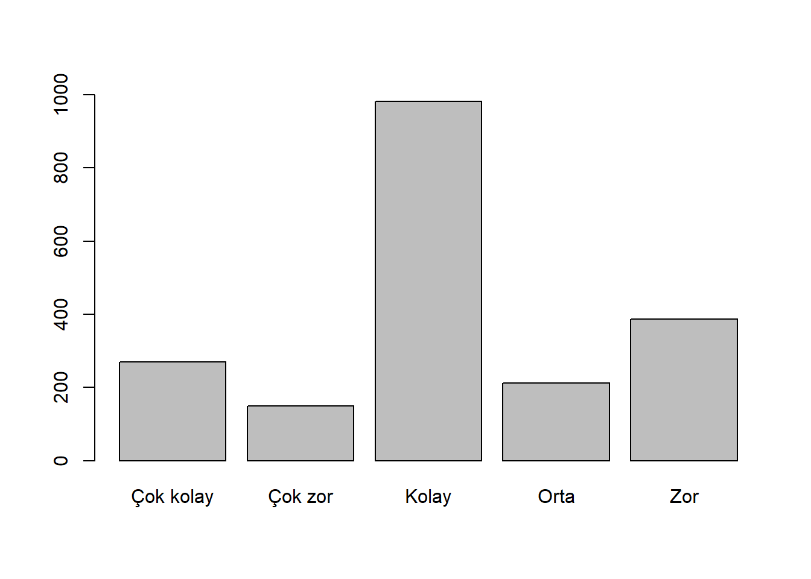
Şekil 1 hanelerin sağlık merkezlerine erişim kolaylığına ilişkin 1-5 skalasında verdikleri cevapların çubuk çizimini göstermektedir. Bu grafiği sıklığa göre büyükten küçüğe sıralayarak çizebiliriz. Şekil 2 bu grafiği göstermektedir.
# çubuk çizimi
barplot(frekans_tablosu, # sıklık tablosu
ylim = c(0,1000) # y ekseninin sınırları
)
text(x = barplot(frekans_tablosu, plot=FALSE),
y = frekans_tablosu,
label = paste0(round(frekans_tablosu_yuzde, 1), "%"),
pos = 1, cex = 0.8, col = "black")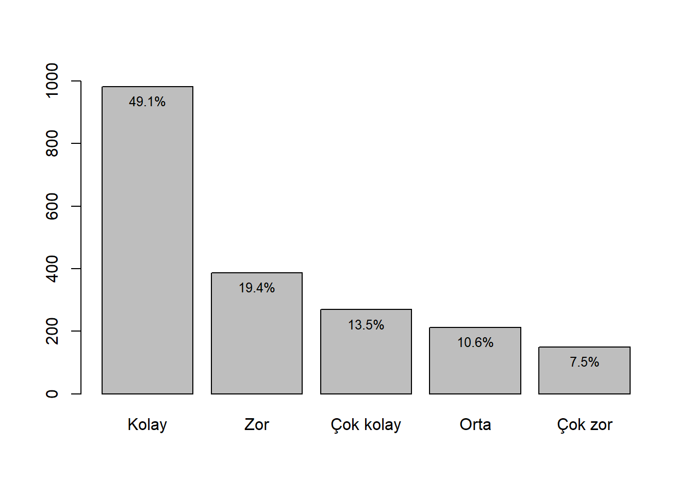
Buna göre hanelerin %49.1’i sağlık merkezlerine ulaşımın kolay olduğunu düşünmektedir. Sağlık merkezlerine erişimin zor olduğunu düşünen hanelerin oranı %19.4, çok zor olduğunu söyleyen hanelerin oranı ise %7.5’tir.
Uygulamalarda yaygın olarak kullanılan başka bir grafik türü pasta grafiğidir. Şekil 3 pie() fonksiyonu ile çizilmiş örnek bir pasta grafiğini göstermektedir.
pie(frekans_tablosu, col = blues9)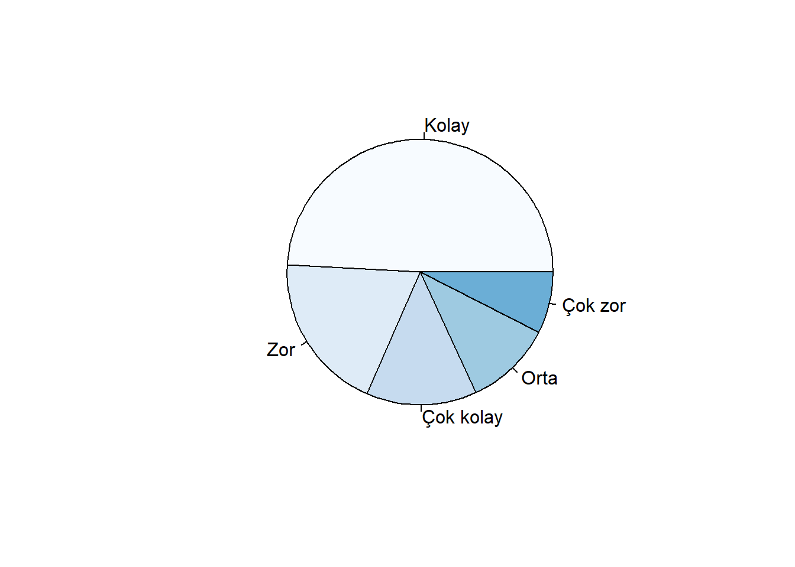
Belirli bir aralıkta herhangi bir değeri alabilen sayısal değişkenleri görselleştirmenin bir çok yöntemi mevcuttur. İzleyen alt bölümlerde bunları ele alacağız.
Frekans (sıklık) tablosu özellikle büyük boyutlu sayısal verilerin yorumlanmasında yardımcı olabilir. Bunun için veriler az sayıda gruplara (sınıflara) ayrılır ve her bir sınıfa kaç gözlem düştüğü yani sıklığı (frekansı) hesaplanır. Bu sıklıklar yüzde olarak da ifade edilebilir.
Örnek 1 Bir eğitim seminerine katılanların yaşları kaydedilmiştir: \[ x=(22, 24, 27, 28, 30, 32, 35, 37, 40, 46). \] Bu veriyi birbirine eşit 4 parçaya ayıralım. Birinci grup: 15-25 yaş grubu 15 yaşında ya da daha büyük ve 25 yaşından küçük bireyleri kapsar. İkinci grup 25-35 yaş grubudur ve 25 (dahil) ile 35 (hariç) yaşları arasındaki bireyleri kapsar. Tablo 1 bu yaş verilerinin sıklık tablosunu göstermektedir.
| Sınıf | Sıklık (frekans) | Yüzde Sıklık | Birikimli sıklık | % Birikimli sıklık |
|---|---|---|---|---|
| 15-25 | 2 | % 20 | 2 | % 20 |
| 25-35 | 4 | % 40 | 6 | % 60 |
| 35-45 | 3 | % 30 | 9 | % 90 |
| 45-55 | 1 | % 10 | 10 | % 100 |
Frekans tablosuna (Tablo 1) göre 2 gözlem, yani verilerin % 20’si 15-25 aralığında değerler almaktadır. Verilerin % 40’ı 25-35, % 30’u ise 35-45 aralığındadır.
Sayısal verilerin sınıflara ayrılmasında cut() fonksiyonu kullanılabilir:
yas <- c(22, 24, 27, 28, 30, 32, 35, 37, 40, 46)
yas_grup <- cut(yas,
breaks = c(15, 25, 35, 45,55),
right = FALSE # sağ sınır dahil değil
)
# Gruplanmış yaş verisindeki frekansları hesaplayalım
frekanslar <- table(yas_grup)
print(frekanslar)yas_grup
[15,25) [25,35) [35,45) [45,55)
2 4 3 1 prop.table(frekanslar)yas_grup
[15,25) [25,35) [35,45) [45,55)
0.2 0.4 0.3 0.1 Örnek 2 32 gözlemden oluşan bir otomobil kümesinde araçların beygir gücü aşağıdaki gibidir:
beygir_gucu <- mtcars$hp
# Veriyi 4x8 tablo haline getirmek için yeniden şekillendir
matrix_data <- matrix(beygir_gucu, nrow = 4, byrow = TRUE)
matrix_data [,1] [,2] [,3] [,4] [,5] [,6] [,7] [,8]
[1,] 110 110 93 110 175 105 245 62
[2,] 95 123 123 180 180 180 205 215
[3,] 230 66 52 65 97 150 150 245
[4,] 175 66 91 113 264 175 335 109stripchart() fonksiyonunu kullanarak verilerin basit bir görsel özetini oluşturun.Çözüm
Şekil 4 beygir gücü verisinin nokta grafiğini göstermektedir.
# Verilerin basit bir görsel özetini stripchart() kullanarak oluştur
stripchart(beygir_gucu,
method = "stack",
main = " ",
xlab = "Beygir Gücü",
col = "blue",
pch = 16)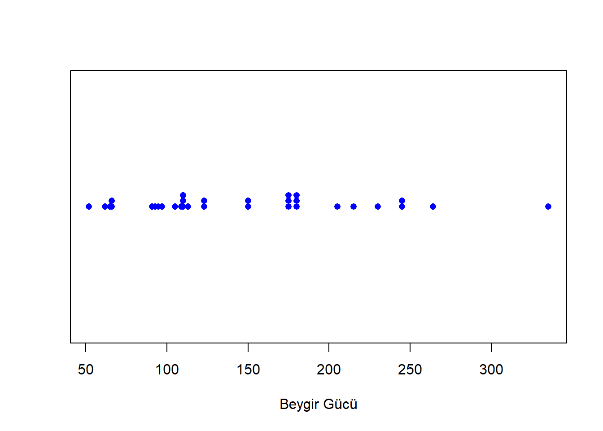
# Beygir gücü verilerini 5 sınıfa bölmek için sınıf aralıklarını belirle
breaks <- seq(min(beygir_gucu), max(beygir_gucu), length.out = 6)
print(breaks)[1] 52.0 108.6 165.2 221.8 278.4 335.0Bu sınır noktalarını kullanarak frekans tablosunu oluşturalım:
# Sınıf aralıklarına göre verileri sınıflandır
beygir_gucu_cut <- cut(beygir_gucu,
breaks = breaks,
include.lowest = TRUE, # en alt sınırı dahil et
right = FALSE # sağ sınır hariç
)
# Frekans tablosunu oluştur
freq_table <- table(beygir_gucu_cut)
freq_tablebeygir_gucu_cut
[52,109) [109,165) [165,222) [222,278) [278,335]
10 9 8 4 1 \([52,109)\) aralığında (52 dahil, 109 hariç) 10 gözlem, \([109, 165)\) aralığında (109 dahil, 165 hariç) 9 gözlem bulunmaktadır. Şekil 5 bu frekans tablosunun çubuk çizimini göstermektedir.
# Frekans tablosunu çubuk grafiği olarak çiz
barplot(freq_table,
main = " ",
xlab = "Beygir Gücü Sınıfları",
ylab = "Frekans",
col = "lightblue",
space=0,
border = "black")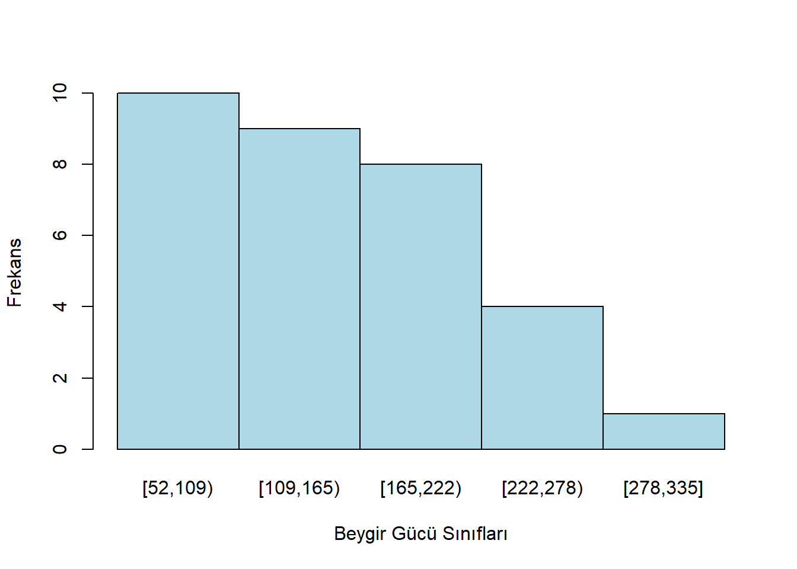
Aralıklar x ekseninde ve frekanslar y ekseninde olacak şekilde çubuk yerine nokta ile de gösterebiliriz (bkz. Şekil 6):
# Sınıf isimlerini al
classes <- names(freq_table)
# Çubuk grafiği yerine noktalar ve dikey çizgiler kullanarak grafiği çiz
plot(as.numeric(freq_table),
type = "p",
main = "",
xlab = "Beygir Gücü Sınıfları",
ylab = "Frekans",
col = "blue",
pch = 19,
xaxt = "n",
ylim = c(0,12))
# Dikey çizgiler ekle
segments(x0 = 1:length(freq_table),
y0 = 0,
x1 = 1:length(freq_table),
y1 = freq_table,
col = "lightblue",
lty = "dashed")
# X ekseni etiketlerini ekle
axis(1, at = 1:length(classes), labels = classes)
# Frekans sayılarını noktaların üzerine yerleştir
text(x = 1:length(freq_table),
y = freq_table,
label = freq_table,
pos = 3,
cex = 0.8,
col = "black")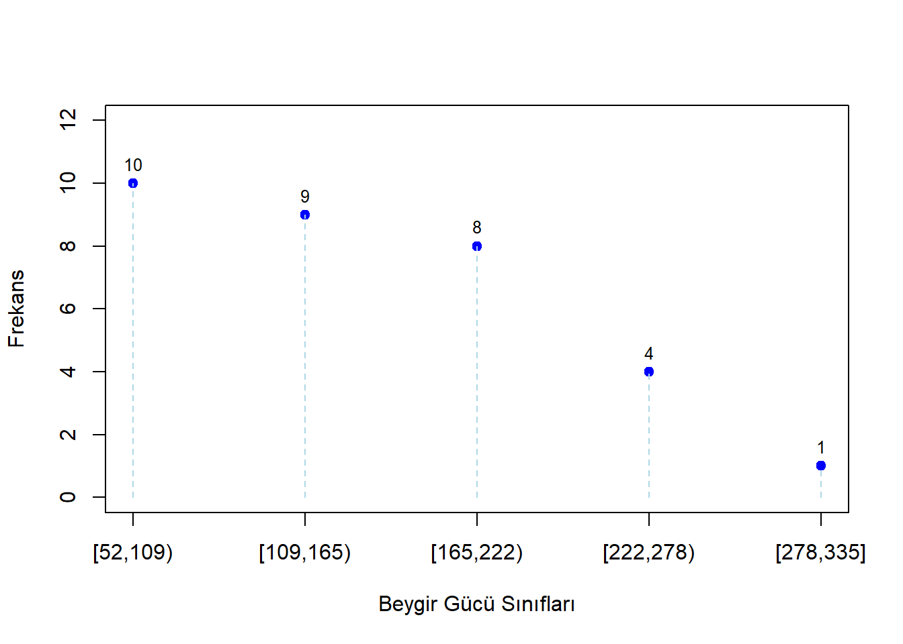
Sınıf sayısının ve genişliğinin frekans dağılımını doğrudan etkilediğine dikkat ediniz. Bu grafiğin özel bir versiyonu histogram adını alır. İzleyen bölümlerde bu grafik türünü inceleyeceğiz.
Bir çapraz tablo iki nominal ya da ordinal değişkenin sıklıklarını gösterir. Eğer A değişkeni \(r\) grup, B değişkeni \(c\) grup içeriyorsa çapraz tablo \(r\times c\) hücreden oluşur. Her hücre o gruplara karşılık gelen gözlem sayısını içerir.
Örnek 3 Hanehalkı örnekleminde aylık geliri kullanarak yeni bir kategorik değişken oluşturalım. Aylık geliri 1883 TL’den düşük olanlar “Düşük Gelir”, 1883-4230 arasında olanlar “Orta gelir” ve 4230 TL’den yüksek olanlar “Yüksek Gelir” olsun.
load("Data/hane_ornek.RData")
hane_ornek$gelir_seviyesi <- ifelse(hane_ornek$aylik_gelir < 1883, "Düşük",
ifelse(hane_ornek$aylik_gelir <= 4230, "Orta", "Yüksek"))
# Sonuçları görmek için
# head(hane_ornek)
table(hane_ornek$gelir_seviyesi)
Düşük Orta Yüksek
499 944 557 Aylık gelir düzeyi ile sigara arasındaki \(2\times 3\) çapraz tabloyu oluşturalım:
hane_ornek$sigara <- factor(hane_ornek$sigara,
levels = c(1, 2),
labels = c("Evet", "Hayır"))
table(hane_ornek$sigara, hane_ornek$gelir_seviyesi)
Düşük Orta Yüksek
Evet 215 503 318
Hayır 284 441 239| Düşük | Orta | Yüksek | Toplam | |
|---|---|---|---|---|
| Evet | 215 | 503 | 318 | 1036 |
| Hayır | 284 | 441 | 239 | 964 |
| Toplam | 499 | 944 | 557 | 2000 |
Tablo 2 çapraz tabloyu göstermektedir. Toplam 2000 hane içinde 215’i düşük gelir grubundadır ve hanede sigara içilmektedir. Yüksek gelir grubundaki hanelerin 318’inde sigara içen vardır, 239 hanede ise yoktur.
Bu tabloyu genel toplama, satır toplamına ya da sütun toplamına göre oran olarak ifade edebiliriz:
# genel toplama oran
tablo <- table(hane_ornek$sigara, hane_ornek$gelir_seviyesi)
prop.table(tablo) * 100
Düşük Orta Yüksek
Evet 10.75 25.15 15.90
Hayır 14.20 22.05 11.95Tüm hanelerin %22.05’i orta gelir grubunda ve sigara içilmeyen hanelerdir. Diğer oranlar da benzer şekilde yorumlanabilir.
# satır toplamına oran:
prop.table(tablo, 1) * 100
Düşük Orta Yüksek
Evet 20.75290 48.55212 30.69498
Hayır 29.46058 45.74689 24.79253Bu tabloda satır toplamları 1’dir. Sigara içilen hanelerde orta gelirlilerin oranı yaklaşık %48.55’tir.
# sütun toplamına oran:
prop.table(tablo, 2) * 100
Düşük Orta Yüksek
Evet 43.08617 53.28390 57.09156
Hayır 56.91383 46.71610 42.90844Bu tabloda ise sütun toplamları 1’dir. Yüksek gelirli hanelerde sigara içilenlerin oranı %57.09, içilmeyenlerin oranı ise %42.91’dir.
Çapraz tablolar çubuk çizimi ile görselleştirilebilir (bkz. Şekil 7).
# Yüzde hesaplama
yuzde <- prop.table(tablo, 2) * 100 # Sütun bazında yüzde
# Yüzdeleri çubukların üzerine ekle
yuzde_yerleri <- barplot(tablo,
beside = TRUE,
col = c("lightblue", "orange"),
main = "",
xlab = "Gelir Grubu",
ylab = "Sayı", ylim=c(0,600),
legend.text = rownames(tablo))
# Yüzdeleri grafiğin üzerine ekle
text(x = yuzde_yerleri,
y = as.vector(tablo),
labels = round(yuzde, 1),
pos = 3, cex = 0.8, col = "black")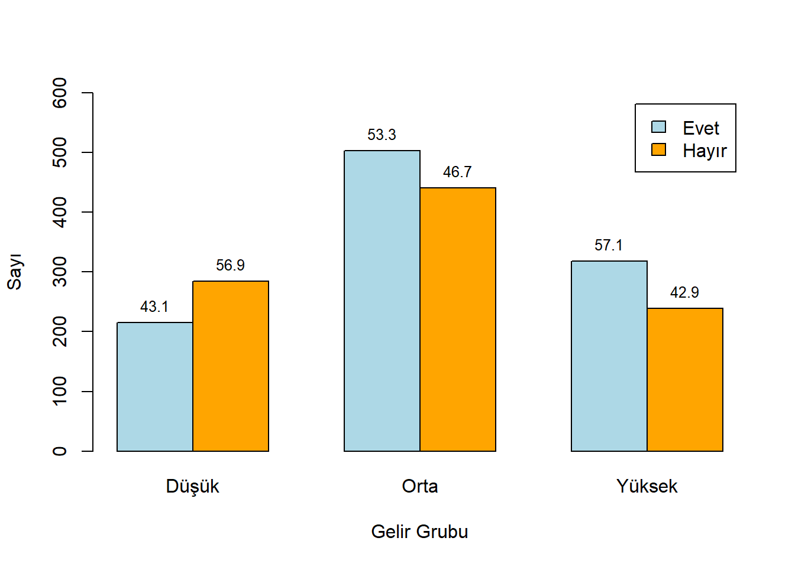
Dal-ve-yaprak (Stem-and-Leaf) grafiği, genellikle az sayıda nümerik gözlemin dağılımını görselleştirmek için kullanılan bir yöntemdir. Bu grafik, veri değerlerini basit bir şekilde gruplandırarak dağılımın şeklini gösterir. Özellikle bilgisayar ya da hesaplama araçlarına erişimin olmadığı durumlarda, bir kağıt ve kalemle hızlıca çizilebilir.
İki basamaklı örnek bir veri kümesinin Dal-ve-yaprak çizimi için aşağıdaki adımlar takip edilebilir:
Gözlem değerleri onlar ve birler basamağı alınarak “dal” ve “yaprak” olarak adlandırılan iki parçaya ayrılır. Örneğin 75 değeri için 7 dal ve 5 yaprak olarak alınabilir.
“Dal” kısmı, veri değerlerinin onlar basamağından oluşur ve genellikle soldan sağa doğru sıralanır.
“Yaprak” kısmı, veri değerlerinin birler basamağından oluşur ve her bir “dal” için bir dizi yaprak değeri içerir.
Her bir “dal” için yaprak değerleri, sıralanmış bir şekilde yan yana yazılır.
Son olarak, her bir dal ile yaprak değerleri arasında bir ayraç kullanılarak dal-ve-yaprak grafiği oluşturulur.
Dal ve yaprak kısımları verilerin değerlerine göre belirlenebilir. Örneğin üç basamaklı değerler alan bir veri kümesi için dal kısmı yüzler basamağı, yaprak kısmı birler basamağı olarak seçilebilir.
Örnek 4 Bir sınavdan alınan 100 üzerinden puanların dal-ve-yaprak çizimini oluşturalım:
not <- c(48, 55, 87, 58, 63, 75, 95, 68, 75, 80, 60, 52, 66)
stem(not)
The decimal point is 1 digit(s) to the right of the |
4 | 8
5 | 258
6 | 0368
7 | 55
8 | 07
9 | 5Burada | işaretinin solunda kalan değerler “stem” (dal), sağında kalan değerler ise “leaf” (yaprak) olarak isimlendirilir. Buna göre bir öğrenci 48, üç öğrenci 50-60 arasında, 4 öğrenci 60-70 arasında not almıştır. Notu 75 olan iki öğrenci vardır. Ayrıca en yüksek notun 95 olduğunu ve 80-90 arasında not alan 2 öğrenci olduğunu görüyoruz.
Örnek 5 Beygir gücü veri kümesinin dal-ve-yaprak çizimini hazırlayınız.
Bu veri kümesinde otomobillerin beygir gücü 52 ile 335 arasında değerler almaktadır. Onlar ve yüzler basamağını “dal”, birler basamağını “yaprak” olarak seçersek:
stem(beygir_gucu, scale = 3)
The decimal point is 1 digit(s) to the right of the |
5 | 2
6 | 2566
7 |
8 |
9 | 1357
10 | 59
11 | 0003
12 | 33
13 |
14 |
15 | 00
16 |
17 | 555
18 | 000
19 |
20 | 5
21 | 5
22 |
23 | 0
24 | 55
25 |
26 | 4
27 |
28 |
29 |
30 |
31 |
32 |
33 | 5grafiğin olası tüm basamakları içerdiğini ve boşluklar oluştuğunu görüyoruz. scale = 1 seçeneğini kullanarak grafiği daha kompakt bir şekilde çizebiliriz:
stem(beygir_gucu, scale = 1)
The decimal point is 2 digit(s) to the right of the |
0 | 5677799
1 | 0011111122
1 | 55888888
2 | 123
2 | 556
3 | 4Bu grafikte “0” 95’ten küçük iki basamaklı gözlemleri içerir. Bu değerler, 52, 62, 65, 66, 66, 91, ve 93, grafikte sırasıyla, 5, 6, 7, 7, 7, 9, ve 9 “yaprak” değerleriyle gösterilmiştir. Benzer şekilde grafikte yer alan 1 dalları 95 (dahil) ile 200 (hariç) arasındaki gözlemleri temsil etmektedir. 1 dal ve 0 yaprak değeri yaklaşık olarak 100 beygir gücünü, 1 dal ve 1 yaprak değeri yaklaşık 110 beygir gücünü göstermektedir. Diğer değerlerde benzer şekilde yorumlanabilir. Sıralanmış veriler:
sort(beygir_gucu) [1] 52 62 65 66 66 91 93 95 97 105 109 110 110 110 113 123 123 150 150
[20] 175 175 175 180 180 180 205 215 230 245 245 264 335En yüksek değerin (335) dal-ve-yaprak grafiğinde 3 dal ve 4 yaprak değeri ile temsil edildiğine dikkat ediniz.
Örnek 6 Türkiye’de il düzeyinde mutluluk endeksinin dal-ve-yaprak yaprak çizimi aşağıdaki gibidir:
load("Data/mutluluk.rda")
stem(mutluluk$mutluluk)
The decimal point is 1 digit(s) to the right of the |
4 | 2
4 | 69
5 | 0012222333344
5 | 56677777778888889999
6 | 0000011111123334444
6 | 55555666788
7 | 00011122344
7 | 5668Buna göre minimum ve maksimum mutluluk endeksleri sırasıyla 42 ve 78 olarak ölçülmüştür. Değerlerin 55-65 arasında yoğunlaştığı görülebilir. Stem basamağının tekrar etmesini istemiyorsak scale=0.5 seçilebilir:
stem(mutluluk$mutluluk, scale=0.5)
The decimal point is 1 digit(s) to the right of the |
4 | 269
5 | 001222233334456677777778888889999
6 | 000001111112333444455555666788
7 | 000111223445668Bu grafik verilerin sayısal özet istatistikleri ile birlikte yorumlanabilir:
summary(mutluluk$mutluluk) Min. 1st Qu. Median Mean 3rd Qu. Max.
41.98 56.54 60.39 61.15 65.57 77.66 Sürekli değerler alan bir veri kümesinin dağılımını görselleştirmenin yaygın olarak kullanılan bir yolu gözlemlerin sınıflara ayrılması ve her sınıfa giren gözlem sayısının (frekansının) grafiğinin çizilmesidir. Bu grafik türüne histogram adı verilir.
Histogram, gözlemleri belirli aralıklara böler ve her aralıktaki gözlem sayısını ya da yüzdesini bir çubuk grafiği olarak gösterir. Bunun için genellikle aşağıdaki adımlar izlenir:
Değerler aralığını bulun.
Verileri belirli ve (genel olarak) birbirine eşit sınıflara bölün (gruplayın).
Her sınıftaki gözlem sayısını hesaplayın.
Her sınıf ya da aralık için bir çubuk oluşturun ve yüksekliğini o aralıktaki gözlem sayısına (frekans ya da sıklık) göre ayarlayın.
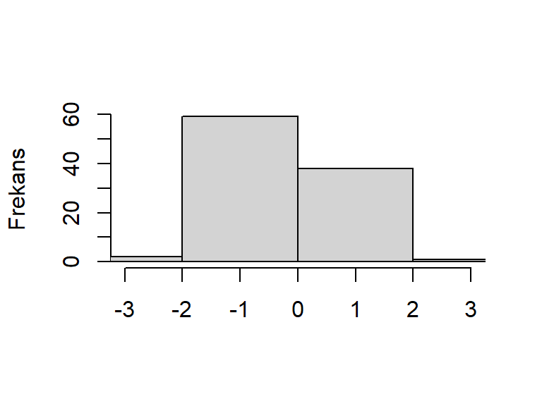
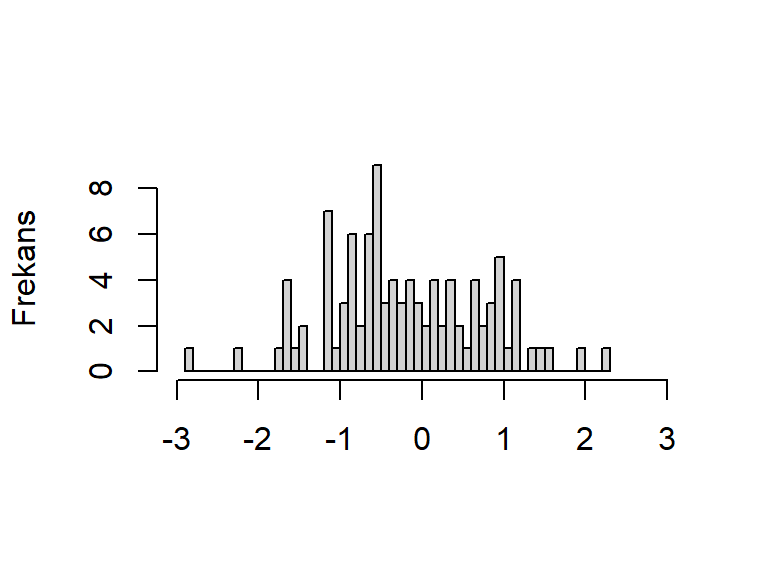
Histogram çizimindeki en önemli kararlardan biri sınıf ya da aralık sayısının belirlenmesidir. Şekil 8 bir veri kümesi için farklı sınıf sayısı tercihlerini göstermektedir. Sınıf sayısı gereğinden az belirlenirse verilerdeki dağılım bilgisi kaybolur. Benzer şekilde sınıf sayısı çok yüksek belirlenirse çubuk sayısı artar, sınıflar arasında boşluklar oluşur ve dağılım fazla inişli çıkışlı olur.
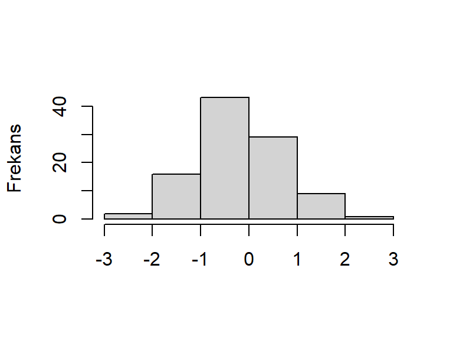
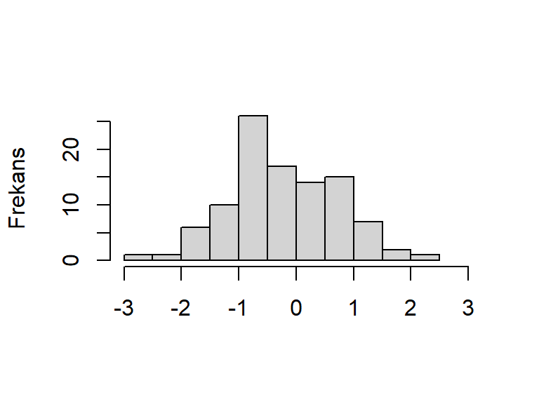
Şekil 9 aynı veri kümesi için sınıf sayısının 6 ve 11 olduğu iki durumu göstermektedir. Her iki sınıf sayısı için histogramın şeklinin yaklaşık olarak simetrik olduğunu görüyoruz. Sınıf sayısını ya da sınıf aralıklarını deneme yanılma ile belirlemek de mümkündür. Pratikte gözlem sayısına bağlı olarak sınıf sayısını belirleyebiliriz.
Histogramdaki sınıf sayısını belirlemek için çeşitli yardımcı formüller önerilmiştir. Sturges formülü, verinin büyüklüğüne bağlı olarak histogramın optimal aralık sayısını aşağıdaki formüle göre hesaplar: \[ h = 1+\log_2(n) \] Burada \(h\) sınıf sayısı ve \(n\) gözlem sayısıdır. Bu formül,daha büyük veri kümeleri için daha fazla aralık ve daha küçük veri kümeleri için daha az aralık önerir.
Freedman-Diaconis kuralı, bir histogramın aralık sayısını belirlemek için kullanılan bir başka yöntemdir. Bu kural, veri setinin dağılımını ve büyüklüğünü dikkate alarak histogram aralıklarını belirler. Freedman-Diaconis kuralı şu şekildedir:
\[ bw = 2~IQR(x)~ n^{-1/3} \] Burada \(bw\) aralık genişliğini, IQR ise kartiller aralığını temsil etmektedir (\(Q_3-Q_1\)).
Scott kuralı, bir histogramın aralık sayısını belirlemek için bir başka yöntemdir. Bu kural, veri setinin standart sapmasını ve büyüklüğünü dikkate alarak histogram aralıklarını belirler. \[ bw=3.5sd(x)n^{-1/3} \] Burada \(sd(x)\) verilerin örneklem standart sapmasını göstermektedir.
Örnek 7 Mutluluk verileri için önerilen sınıf sayılarını hesaplayalım:
sturges <- nclass.Sturges(mutluluk$mutluluk)
scott <- nclass.scott(mutluluk$mutluluk)
fd <- nclass.FD(mutluluk$mutluluk)
c(Sturges = sturges, Scott=scott, Friedman_Diaconis=fd) Sturges Scott Friedman_Diaconis
8 6 9 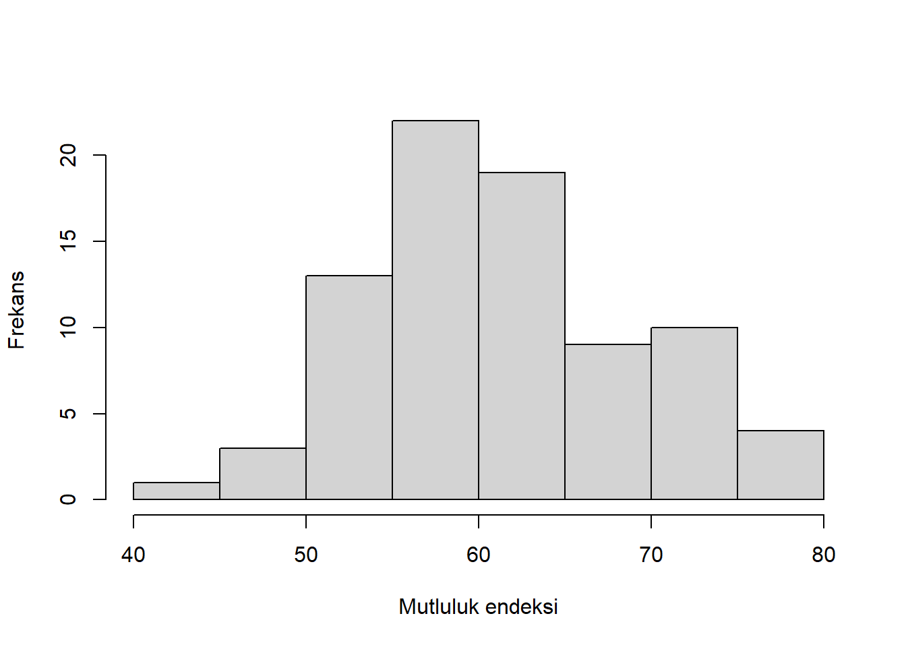
Şekil 10 mutluluk endeksinin histogramını göstermektedir. Sınıf sayısı 8 olarak belirlenmiştir. Bu histograma göre mutluluk düzeyinin merkezi eğiliminin 60 civarında olduğunu söyleyebiliriz. Mutluluk düzeyi azaldıkça ve arttıkça frekans azalmaktadır. Bu veri kümesinde ortalama ve medyan, sırasıyla, 61 ve 60 olarak bulunmuştu:
summary(mutluluk$mutluluk) Min. 1st Qu. Median Mean 3rd Qu. Max.
41.98 56.54 60.39 61.15 65.57 77.66 R’da histogramın çiziminde kullanılan istatistikleri görmek istersek aşağıdaki kodu çalıştırabiliriz:
hist_mutluluk <- hist(mutluluk$mutluluk, breaks = 8, plot = FALSE)
str(hist_mutluluk)List of 6
$ breaks : int [1:9] 40 45 50 55 60 65 70 75 80
$ counts : int [1:8] 1 3 13 22 19 9 10 4
$ density : num [1:8] 0.00247 0.00741 0.0321 0.05432 0.04691 ...
$ mids : num [1:8] 42.5 47.5 52.5 57.5 62.5 67.5 72.5 77.5
$ xname : chr "mutluluk$mutluluk"
$ equidist: logi TRUE
- attr(*, "class")= chr "histogram"hist() fonksiyonu birbirine eşit aralıklı sınıfları (breaks) ve her sınıfa düşen gözlem sayısını (counts) gösterir. Sınıf (bin) genişliği 5 birimdir. Gri renkte gösterilen dikdörtgenin uzunluğu (y ekseni) o sınıfa düşen gözlem sayısı ile orantılıdır. Sınıf aralıklarının tanımı \((a, b]\) (right = TRUE) ya da \([a,b)\) (right = FALSE) olarak seçilebilir.
Yoğunluk (density) her sınıfa düşen gözlem sayısının (counts) gözlem sayısı ve sınıf genişliğine oranıyla bulunur. Örneğin 40-45 aralığında sadece 1 gözlem vardır. Toplam gözlem sayısı 81 ve sınıf genişliği 5 olduğu için yoğunluk
1/81/5[1] 0.002469136yaklaşık 0.00247 olarak bulunur.
$mids sınıfların orta noktalarını göstermektedir.
cut() fonksiyonu ile de sınıfların ve sıklıklar hesaplanabilir:
m_cut <- cut(mutluluk$mutluluk, breaks=seq(40,80,5), right=FALSE)
table(m_cut)m_cut
[40,45) [45,50) [50,55) [55,60) [60,65) [65,70) [70,75) [75,80)
1 3 13 22 19 9 10 4 Buradan frekans tablosunu aşağıdaki gibi oluşturabiliriz:
# Mutluluk endeksi için frekans tablosu
frekans = table(m_cut)
goreli_frekans = 100*frekans/81
kumulatif_frekans = cumsum(goreli_frekans)
yogunluk = frekans/81/5
cbind(frekans,
goreli_frekans=round(goreli_frekans, 2),
kumulatif_frekans=round(kumulatif_frekans, 2),
yogunluk=round(yogunluk,5)) frekans goreli_frekans kumulatif_frekans yogunluk
[40,45) 1 1.23 1.23 0.00247
[45,50) 3 3.70 4.94 0.00741
[50,55) 13 16.05 20.99 0.03210
[55,60) 22 27.16 48.15 0.05432
[60,65) 19 23.46 71.60 0.04691
[65,70) 9 11.11 82.72 0.02222
[70,75) 10 12.35 95.06 0.02469
[75,80) 4 4.94 100.00 0.00988Sayısal değerler alan bir değişkenin yoğunluk grafiği düzleştirilmiş histogram olarak yorumlanabilir. Sınıf aralıkları daraldıkça (ya da sınıf sayısı arttıkça) histogram yoğunluk fonksiyonuna yaklaşır.
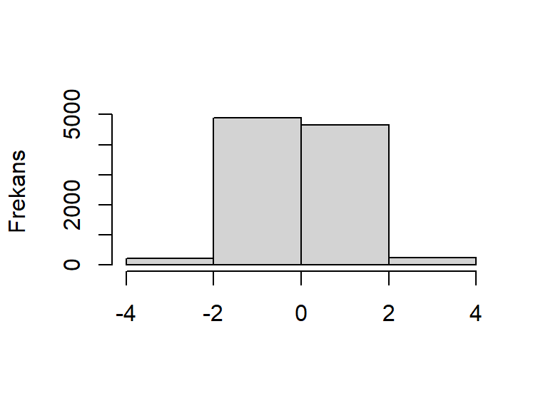
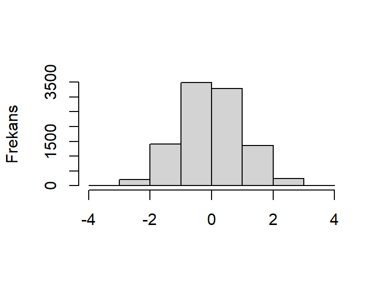
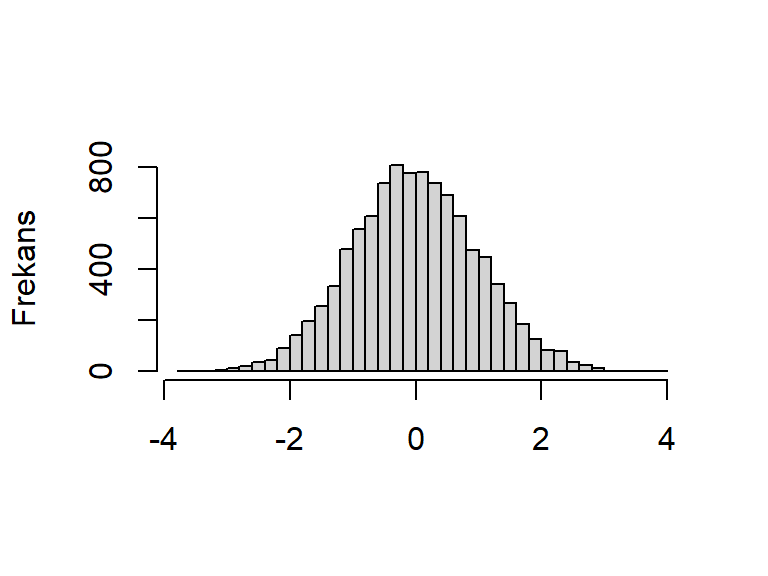
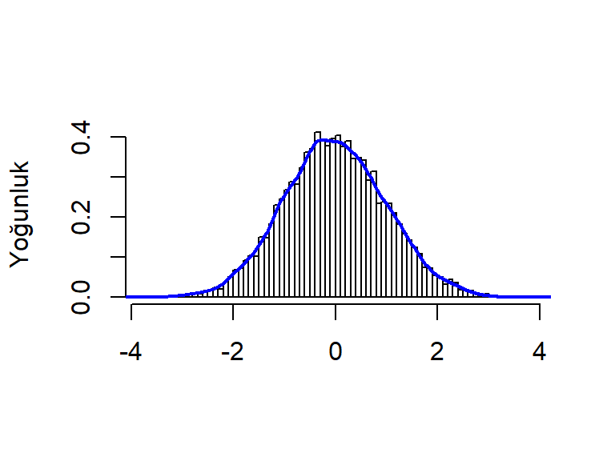
Şekil 11 histogram ve yoğunluk arasındaki ilişkiyi göstermektedir. Bu grafikte sınıf sayısı arttıkça histogramın yoğunluk fonksiyonuna yaklaştığına dikkat ediniz (bkz. Şekil 11 (d)). Histogram yorumunda olduğu gibi dağılımın merkezine doğru yaklaştıkça yoğunluk artmaktadır. Görece daha az sıklıkta gerçekleşen değerler için yoğunluk daha düşük değerler alır. İzleyen bölümlerde buradan hareketle olasılıkları nasıl hesaplayabileceğimizi öğreneceğiz.
R density() fonksiyonunu kullanarak yoğunlukları hesaplayabilir ve görselleştirebiliriz.
Örnek 8 İllere göre mutluluk endeksinin yoğunluk grafiğini çiziniz.
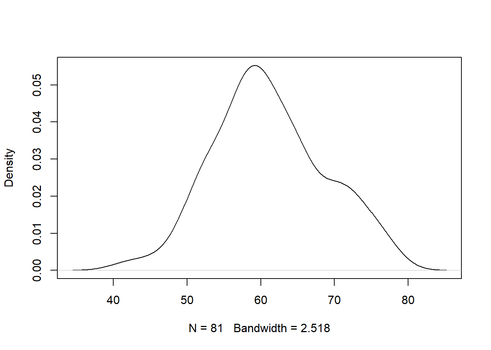
Yoğunluk ya da düzleştirilmiş histograma göre gözlem değerleri 55-65 arasında “yoğunlaşmaktadır” (Şekil 12). Sol ve sağ kuyruklara doğru gidildikçe yoğunluk azalmaktadır.
Histogram ve yoğunluğu birlikte de çizebiliriz (bkz. Şekil 13)
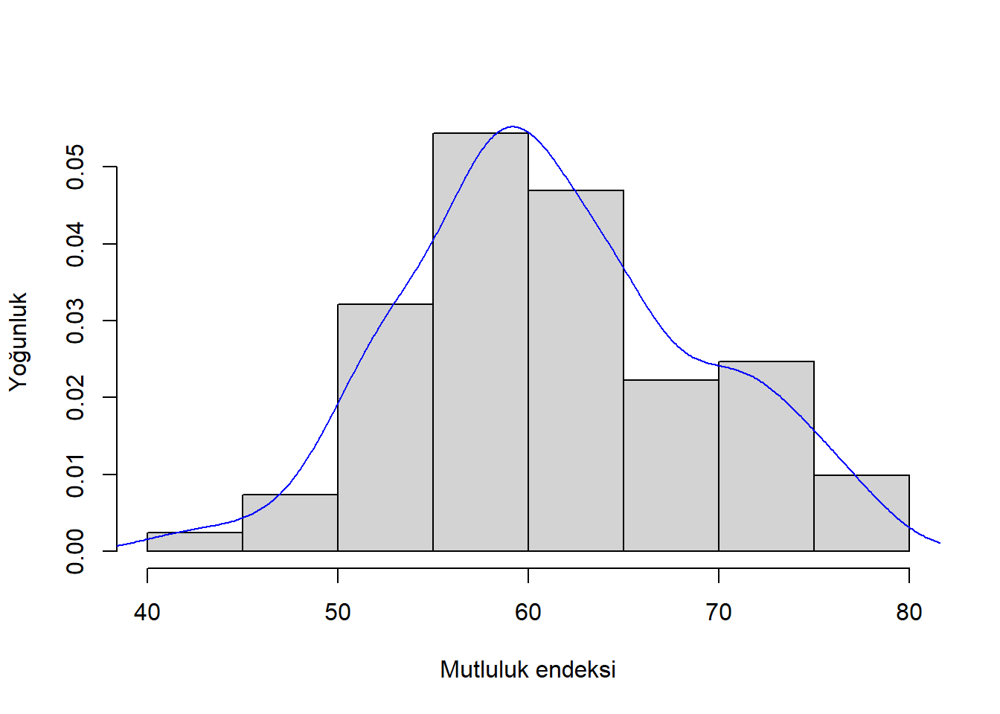
Yoğunluk fonksiyonunun detayları için yardım dosyasına bakınız, ?density()
Histogram ya da yoğunluk grafikleri dağılımın simetriklik, sağa ve sola çarpıklık gibi özelliklerine ilişkin önemli bilgiler verir. Simetrik bir dağılımın merkezinin iki tarafı birbirine benzer. Şekil 14 simetrik dağılan üç histogramı göstermektedir. Merkezden geçen kırmızı çizginin her iki tarafı benzer şekle sahiptir.
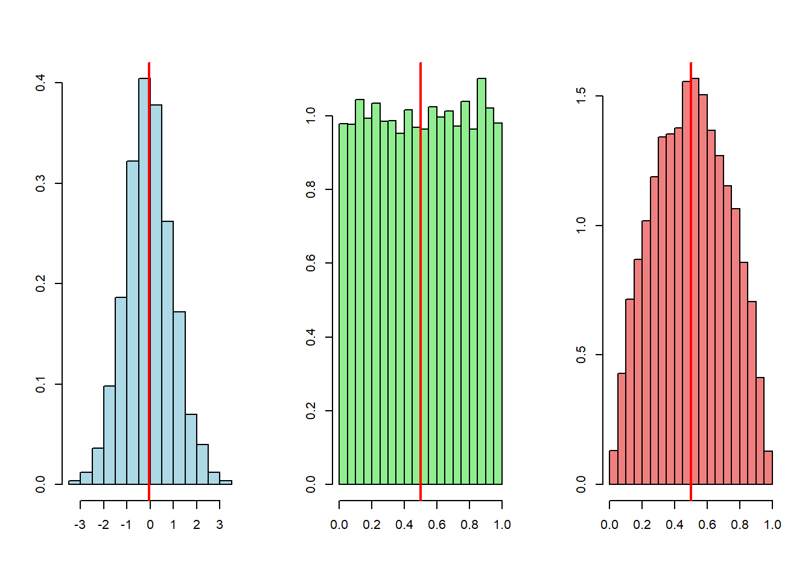
Simetrik bir dağılımın uçlardaki davranışı birbirine benzer. Ancak bazı dağılımların kuyrukları daha uzun olabilir. Buna çarpıklık denir.
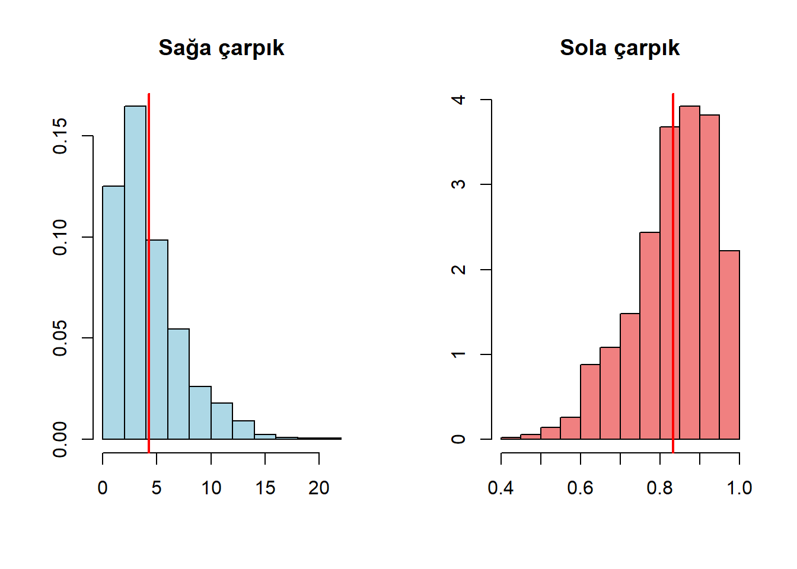
Şekil 15 simetrik olmayan dağılımları göstermektedir. Sağa çarpık dağılımların sağ kuyruğu daha uzundur. Böyle bir dağılımda yoğunlaşma küçük ve orta değerlerdedir. Örneğin ücretler, hane geliri ve harcaması, ve ev fiyatları tipik olarak sağa çarpık dağılır. Sola çarpık bir dağılımda ise sol kuyruk daha uzundur. Değerler büyüdükçe yoğunlaşma artmaktadır. Çok zorlayıcı olmayan bir sınavda not dağılımı sola çarpık olabilir. Çok sayıda öğrenci yüksek not alırken daha az sayıda öğrenci düşük notlar alır. Başka bir örnek emeklilik yaşı olabilir.
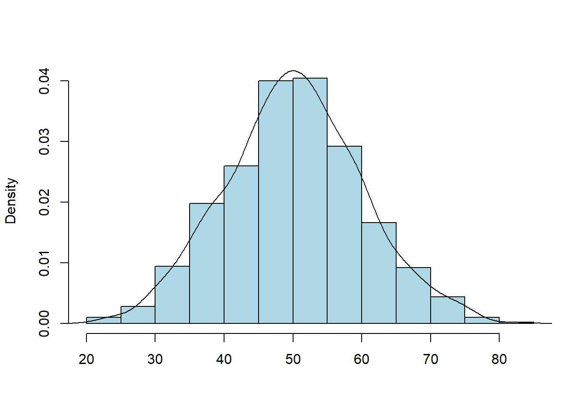
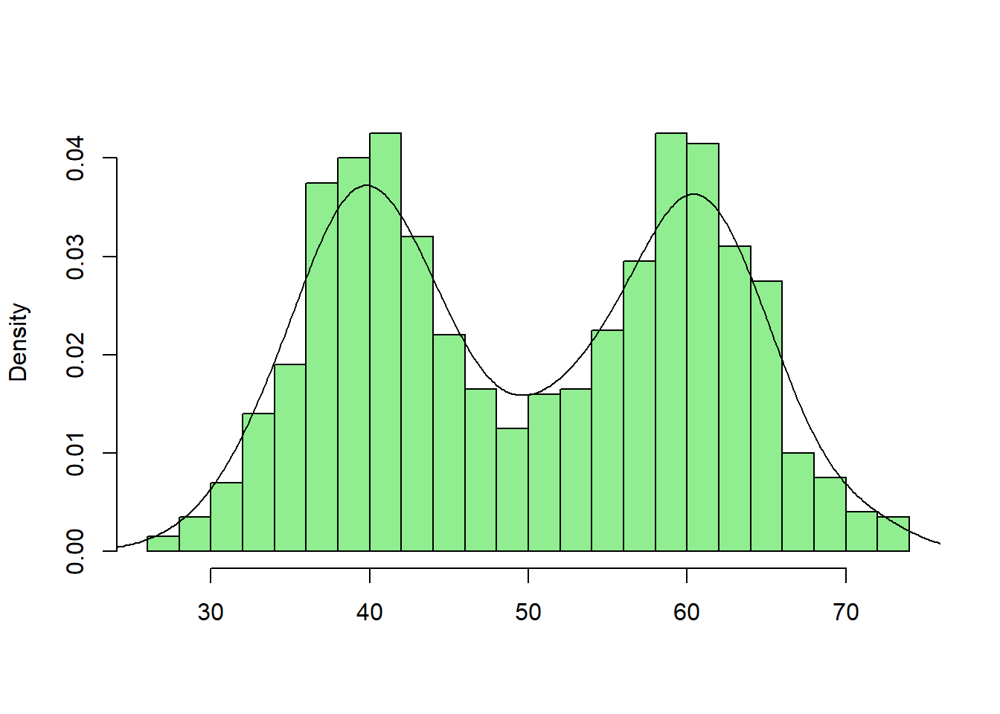
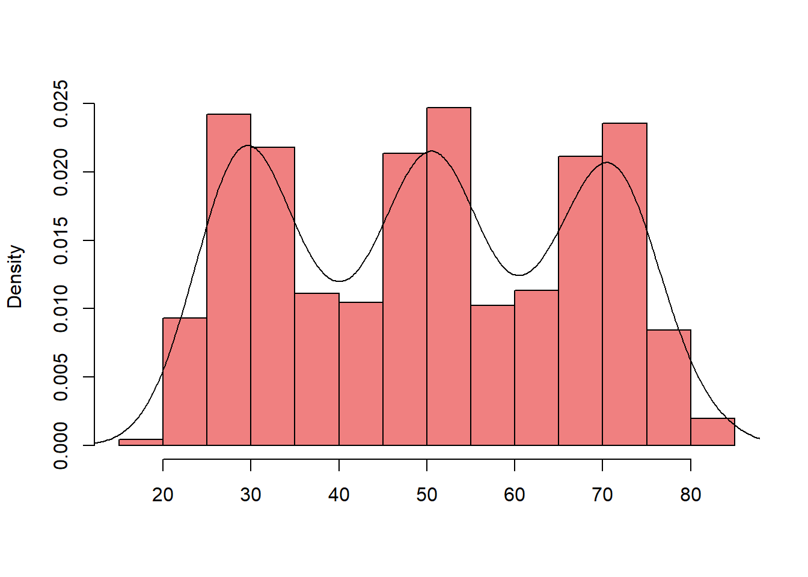
Histogramların önemli bir başka özelliği de modalliktir. Modallik, dağılımda kaç tane tepe noktası (mod) olduğunu gösterir ve verilerin farklı alt gruplara bölünmesi gerektiğine işaret edebilir.
Tek tepeli (unimodal) bir dağılımda, Şekil 16 (a) da görüldüğü gibi, histogramın yalnızca bir belirgin tepe noktası vardır. Verinin büyük çoğunluğu belirli bir değerde toplanmıştır. İki tepe noktası olan dağılımlar çift tepeli olarak adlandırılır (Şekil 16 (b)). Bu tür dağılımlar, genellikle verinin iki farklı grup veya popülasyondan geldiğini gösterebilir. Örneğin, erkek ve kadın bireylerin boy dağılımı çift tepeli olabilir. Üç veya daha fazla tepe noktası olan dağılımlar çok modlu olarak adlandırılır (Şekil 16 (c)). Bu durum, verinin farklı alt gruplardan oluştuğunu veya karmaşık bir yapıya sahip olduğunu gösterebilir.